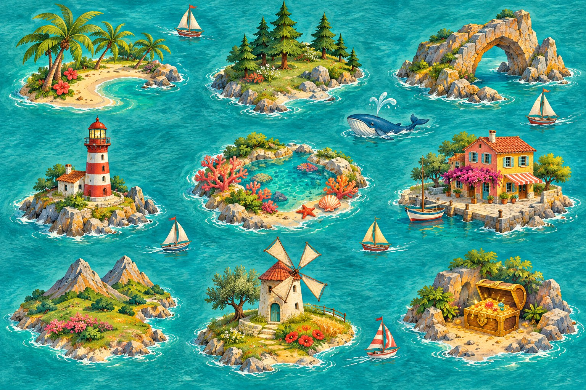

Bilgi Adası › Matematik › Çarpım Adası
MATEMATİK MACERASI
Çarpım Adası
Dokuz adayı keşfet, çarpımları çöz ve yıldızları topla!
⚑ 2–4. sınıf

✥ Keşif haritası
🏆
Keşif günlüğüm
Dokuz adayı keşfet, çarpımları çöz ve yıldızları topla!
